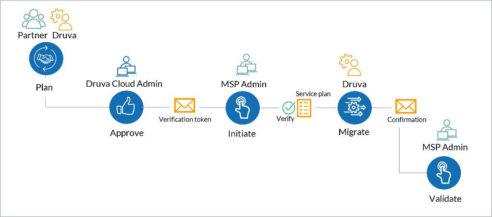
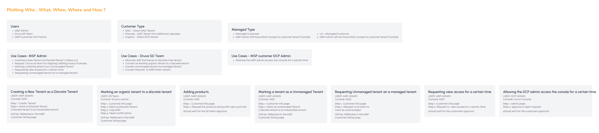
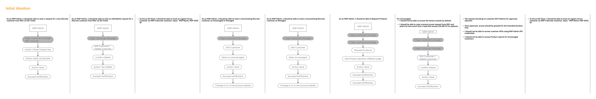
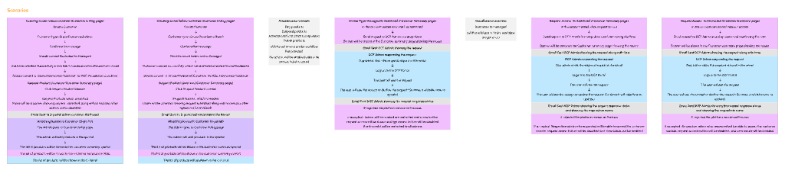
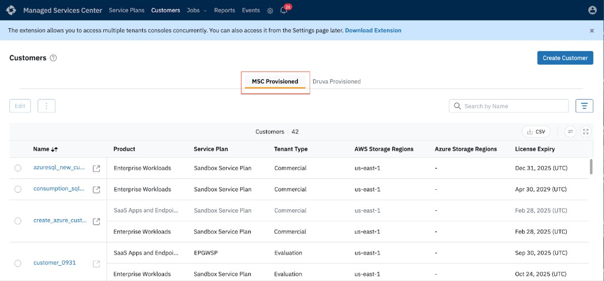
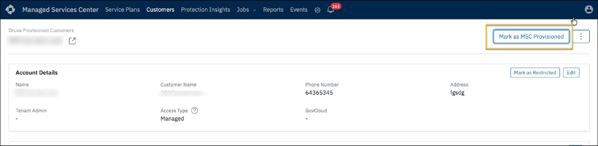
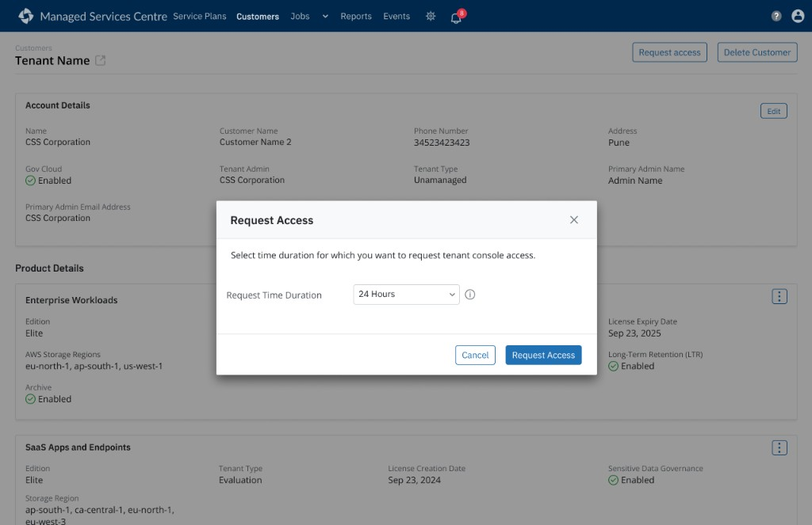
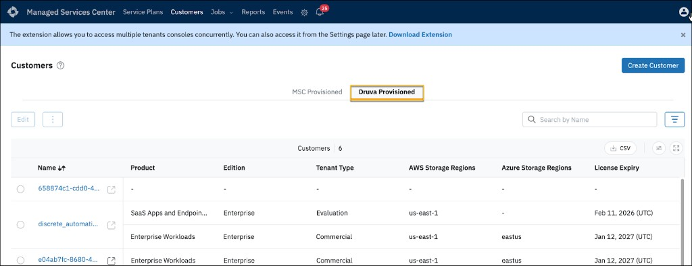

Priya
MSP Admin · Partner
Runs backup and licensing for dozens of customer tenants from MSC every day.
Goal: Provision and expand products without opening a support ticket.
Case Study · Druva
Self-serve product expansion for MSP partners — plan, approve, initiate, migrate, and validate without filing a support ticket each time.

Context
Druva
Cloud data protection and management for enterprise.
MSP (Partners)
Managed Service Providers who sell and manage Druva for their own client base.
MSC (Managed Services Center)
The portal MSPs use to provision and manage backup, licensing, and security across every customer from one login.
Existing scenario
Hit the MSC product ceiling, open a support ticket for every expansion, and risk losing deals they cannot provision.
Unclear who can see their console; partner access feels all-or-nothing and threatens compliance privacy.
Support and PMs manually map licenses and complete out-of-set provisioning — high ticket load, slow handoffs.
Preferred scenario
Self-serve product expansion inside a clear MSC- or Druva-provisioned model — state readable before the click.
Hold the veto: approve or reject time-boxed partner access with auto-revoke — privacy stays under their control.
Fewer manual interventions; conversion and access paths are explicit so Support steps in only for true exceptions.

The Problem
Licensing blocked the obvious fix — just add products. How might we expand what MSPs can sell within licensing constraints — without breaking customer privacy?
Personas
MSP Admin · Partner
Runs backup and licensing for dozens of customer tenants from MSC every day.
Goal: Provision and expand products without opening a support ticket.
Customer Admin · End customer
Owns the customer console and compliance posture for their organization.
Goal: Keep partner access time-boxed and under their approval.
Druva Support · Internal
Handles provisioning exceptions, license mapping, and partner escalation tickets.
Goal: Step in only for true exceptions — not every product add.
User Needs & Core Use Cases
01
Self-serve expansion without re-creating the account.
02
Create and provision in one connected journey.
03
Managed vs Restricted with clear operational boundaries.
04
Temporary MSP access — customer approves or rejects.
Four States
| Restricted | Unrestricted | |
|---|---|---|
| MSC-Provisioned | Core products only. No advanced workloads. | Full MSP access to console, accounts, and reports. |
| Druva-Provisioned | Licenses provisioned; no console access afterward. | Full access plus workloads unavailable to MSC customers. |
System Architecture
1. Plotting Actors & Actions: A system-mapping pass — who the users are, which consoles they touch, and the what / why / when / where of every action. Laying it out this way let me declutter the actions and see the system as a whole before designing a single screen.

2. Initial Ideation: For each task, I mapped the basic actions a user actually takes to complete it end to end — turning eight distinct workflows into clear, separate paths instead of one rigid flow.

3. End-to-end Scenarios: Decluttering the actions across all three portals — mapping exactly which user, on which page, performs which action, so the creation, conversion, and approval loops held together logically.

Final UI
Badges on the customer list show provisioning origin and access state. Actions that don't apply are disabled with a reason, not hidden, so partners learn the rules without a manual.

Marking a tenant 'Discrete' cannot be undone. I used a typed confirmation dialog and blocked invalid conversions before the click, rather than throwing an error afterward.

Restricted customers give the partner no standing access. The partner requests a 24-72 hour window, the customer admin approves it, and access auto-revokes precisely at the API layer.

What Shipped


Some screens withheld or simplified under NDA.
Outcomes
Partners provision advanced workloads directly. No support ticket is needed per addition.
The four access states read at a glance. Irreversible and invalid conversions are handled deliberately.
By removing the provisioning ceiling, the design helped MSC bring on more partner customers and drove higher product adoption.
Validated qualitatively with Support and PMs post-launch; growth and adoption are directional outcomes the design enabled, not metrics I measured in isolation.
References & Documentation
Explains the fundamental difference between states and their access boundaries.
Details the workflow for migrating existing customers into the new MSC model.
Outlines how MSPs manage ongoing access and product provisioning daily.